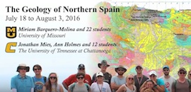
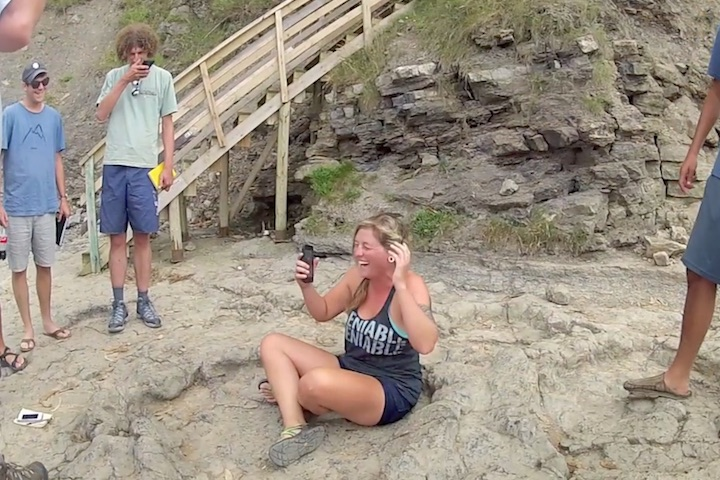

July 24, 2016


| Monte Perdido Our climb of Monte Perdido, the highest limestone massif in western Europe 4 minutes, 1280x720, .mov, hosted on YouTube, an excerpt from the 34-minute video, right |
Spain, 2016 Our field trip to the Spanish Pyrenees with folks from the University of Missouri 34 minutes, 1280x720, .mov, hosted on YouTube |
 |
| Student presentation on sheath folds at Cap de Creus July 20, 2016 |
| Student presentation on lherzolite at Etang de Lers, France. July 21, 2016 |
| Miriam describes the geology for our hike to Estany de Sant Maurici July 22, 2016 |
| Pointing our avalanche chutes on our hike to Estany de Sant Maurici July 22, 2016 |
| Student presentation on the Maladeta batholith contact aureole July 22, 2016 |
| The hike up Pineta Valley July 23, 2016 |
| Student presentation on the little ice age, Pineta Valley July 23, 2016 |
| Photo op near the headwall of Pineta Valley July 23, 2016 |
| A group shot at Balcon de Pineta (top of the headwall), looking down Pineta Valley July 23, 2016 |
| At Castillo de Samitier, with the Mediano anticline in the background July 24, 2016 |
| Student presentation on hydroelectric power at the Mediano Dam July 24, 2016 |
|
| Camp, at 7,510 feet, on Monde Perdido, above Ordesa Valley July 24, 2016 |
| Starting the steep ascent along la Escupidera, to the summit of Monte Perdido July 25, 2016 |
| On the summit of Monte Perdido, 9:30am, 25 July, 2016 July 25, 2016 |
| Yours truly and 3 UTC students on the summit of Monte Perdido, with Cilindro de Marbore (recumbent fold) in the background July 25, 2016 |
| Descending the clavijas (pitons) and chains of Soaso. July 25, 2016 |
| UTC students in Ordesa Valley July 25, 2016 |
| Student presentation on the Soasa bleachers waterfall and differential erosion July 25, 2016 |
| Looking tough at Atapuerca July 26, 2016 |
| Atapuerca archeological site July 26, 2016 |
| Atapuerca archeological site July 26, 2016 |
| Student presentation on Cretaceous carbonates of Castro Urdiales July 27, 2016 |
| UTC student sitting in a dinosaur footprint (huellas de dinosaurios) at Colunga July 27, 2016 |
 |
| Huellas de dinosaurios at Colunga, from above July 27, 2016 |
| A discussion of carbonate weathering along the trail to Jou Santu, Picos de Europa July 28, 2016 |
| Lago Enol, Picos de Europa July 28, 2016 |
| Student presentation on glaciokarstic processes at Pandebano Pass July 29, 2016 |
| Starting on the Senda del Arcediano to Amieva July 30, 2016 |
| Student presentation on coal in the Cantabrian Mountains at the Museum of Mining and Industry, El Entrego July 31, 2016 |
| Student presentation on U-shaped glacial valleys along the trail to the Santa Rita iron mine and Pico Albos Aug 1, 2016 |
| Anne Holmes with UTC student along the trail to the Santa Rita iron mine and Pico Albos Aug 1, 2016 |